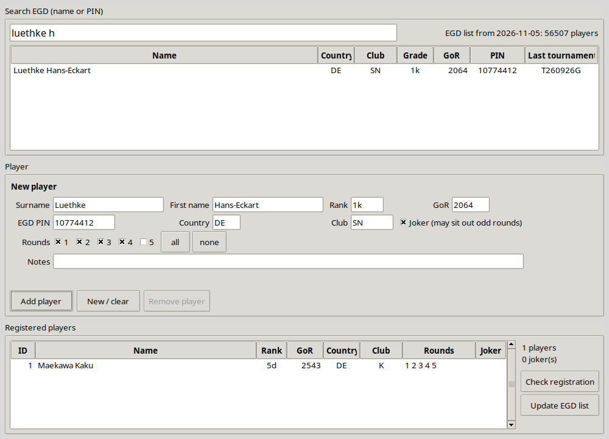

Diese Anleitung beschreibt das ganze Turnier, von der Anmeldung bis zum Upload in die EGD. Alle hier beschriebenen Funktionen sind in Version 0.2 verfügbar.
Statt McMahon-Punkten hat jeder Spieler eine Turnierwertung (TGoR):
con der Formel wird mit dem k-Faktor des Turniers
multipliziert, sodass sich die Wertungen schneller bewegen als in der EGD. Der Anti-Deflations-Bonus der
EGD wird nicht verwendet. Alle Partien einer Runde werden mit den TGoRs vor dieser Runde
gewertet.Jeder Schritt liest und schreibt LibreOffice-Calc-Dateien (.ods). Zwischen den Schritten
können Sie sie öffnen, prüfen und von Hand ändern. Die Dateien sind die einzige Aufzeichnung des Turniers:
Es gibt keine versteckte Datenbank.
gotourney initgotourney guigotourney pair rresults checkgotourney wallgotourney h9Die Schritte 3 und 4 werden für jede Runde wiederholt.
Alle Dateien eines Turniers liegen in einem Ordner:
mein_turnier/ tournament.toml Einstellungen (Schritt 1) translation.toml Texte für eine eigene Sprache der PDFs (Schritt 1) players.ods angemeldete Spieler (Schritt 2) round_1.ods Auslosung der Runde 1; Ergebnisse hier eintragen (Schritte 3, 4) round_1.pdf druckbare Auslosung der Runde 1, nach Brett (Schritt 3) round_1_alphabetical.pdf dieselbe, Spieler nach Nachname (Schritt 3) round_2.ods ... standings.ods TGoR nach jeder Runde (Schritt 4) standings.pdf druckbare Tabelle / Kreuztabelle (Schritt 4) wall_list.ods Wandtabelle, bearbeitbar (Schritt 5) awards.pdf Folien für die Siegerehrung (Schritt 5) <name>.h9 Ergebnisdatei für die EGD (Schritt 6)
Alle Befehle verstehen die Option -d <Ordner>, mit der Sie den Turnierordner wählen.
Ohne sie wird der aktuelle Ordner verwendet. Sie können also einmal cd mein_turnier ausführen
oder bei jedem Befehl -d mein_turnier angeben.
Voraussetzungen auf jedem System: Python 3.11 oder neuer (mit Tkinter für das Anmeldefenster),
LibreOffice zum Bearbeiten der .ods-Dateien und der Projektordner TournamentOrgaTool
auf Ihrem Rechner. Für die Installation und die EGD-Abfragen wird eine Internetverbindung gebraucht. In den
Beispielen liegt der Projektordner in Ihrem Benutzerordner; passen Sie den Pfad an, wenn er woanders liegt.
Ubuntu / Debian:
sudo apt install python3 python3-venv python3-tk fonts-dejavu-core libreoffice-calc cd ~/TournamentOrgaTool python3 -m venv .venv .venv/bin/pip install -e . source .venv/bin/activate # danach funktioniert 'gotourney' in diesem Terminal gotourney --help
Andere Distributionen brauchen dieselben Pakete unter anderen Namen, zum Beispiel Fedora:
sudo dnf install python3 python3-tkinter dejavu-sans-fonts libreoffice-calc, Arch:
sudo pacman -S python tk ttf-dejavu libreoffice-fresh.
python.org; Tkinter ist enthalten. Das python3 aus Apples Entwicklerwerkzeugen ist
zu alt. Alternativ mit Homebrew: brew install python@3.12 python-tk@3.12.libreoffice.org (oder
brew install --cask libreoffice).cd ~/TournamentOrgaTool python3 -m venv .venv .venv/bin/pip install -e . source .venv/bin/activate gotourney --help
brew install --cask font-dejavu.python.org. Kreuzen Sie im ersten Fenster „Add python.exe to PATH“ an. Lassen Sie die
Option tcl/tk and IDLE ausgewählt (Standard); sie wird für das Anmeldefenster gebraucht.libreoffice.org.cd $HOME\TournamentOrgaTool # Eingabeaufforderung: cd %USERPROFILE%\TournamentOrgaTool py -m venv .venv .venv\Scripts\pip install -e . .venv\Scripts\activate gotourney --helpVerweigert die PowerShell
activate („Ausführung von Skripts ist deaktiviert“), führen Sie
einmal Set-ExecutionPolicy -Scope CurrentUser RemoteSigned aus oder verwenden Sie das Werkzeug
ohne Aktivieren: .venv\Scripts\gotourney --help.*. Für alle Symbole installieren Sie die freien DejaVu-Schriften: von
dejavu-fonts.github.io herunterladen, entpacken, DejaVuSans.ttf und
DejaVuSans-Bold.ttf mit der rechten Maustaste → Installieren.gotourney gui -d C:\Turniere\Fruehjahr. Pfade mit Leerzeichen brauchen Anführungszeichen.source .venv/bin/activate,
Windows: .venv\Scripts\activate) oder rufen das Werkzeug mit vollem Pfad auf
(.venv/bin/gotourney, Windows: .venv\Scripts\gotourney). Bei aktiver Umgebung
funktioniert auch python -m gotourney.pipx install -e ~/TournamentOrgaTool den Befehl gotourney in jedem
Terminal ohne Aktivieren verfügbar (vorher pipx installieren, z. B.
sudo apt install pipx, brew install pipx oder py -m pip install --user pipx).gotourney egd update aus, um die EGD-Spielerliste herunterzuladen. Sie liegt
im Ordner .cache/gotourney in Ihrem Benutzerordner (Windows:
C:\Users\<Name>\.cache\gotourney).GOTOURNEY_FONT auf eine
.ttf-Datei (optional gefolgt vom Pfadtrenner – : unter Linux/macOS, ;
unter Windows – und einer fetten .ttf). Die Schrift muss die Steinsymbole ○ und ● enthalten,
sonst wird die nächste geeignete Schrift verwendet.pip install -e . erneut aus. Turnierordner sind davon nicht betroffen.pip install -e '.[test]' (Windows: ".[test]") installiert
die Testwerkzeuge; pytest führt die Tests aus.gotourney init mein_turnier --name "Frühjahrsturnier 2026" --rounds 5 --language de
Das legt den Ordner mit tournament.toml, einer leeren players.ods und
translation.toml an (siehe 4.1). --language (en, de oder
fr, Standard en) bestimmt die Sprache der PDFs. Öffnen Sie
tournament.toml in einem Texteditor und tragen Sie die Einstellungen ein, bevor Sie Spieler
anmelden:
| Einstellung | Beispiel | Bedeutung |
|---|---|---|
| [tournament] – EGD-Metadaten, stehen im Kopf der .h9-Datei | ||
code | "" | EGD-Turniercode. Leer lassen: Die EGD vergibt ihn nach dem Upload. |
name | "Frühjahrsturnier 2026" | Name des Turniers (EV). |
place | "DE, Musterstadt" | Land und Ort (PC). |
dates | ["2026-09-26", "2026-09-27"] | Erster und letzter Tag (DT). |
class | "A" | EGD-Turnierklasse (CL). |
time | 75 | Grundbedenkzeit in Minuten (TM). |
comment | "(eingereicht von …)" | Kommentar (CM). |
rounds | 5 | Anzahl der Runden (auch init --rounds). |
| [output] | ||
language | "de" | Sprache der PDFs (Auslosung, Tabelle, Siegerehrung): en, de, fr oder custom (siehe 4.1). |
translation_file | "translation.toml" | Die Texte für language = "custom". |
| [rating] | ||
k_factor | 3.0 | Multipliziert den EGD-Faktor con. Höhere Werte lassen die Wertungen im Turnier schneller steigen und fallen. |
top_bar | "3d" | Obergrenze für die Start-TGoR: ein Rang ("3d" = 2300) oder eine GoR-Zahl (2350). "none" schaltet die Obergrenze ab. Nur der Start ist begrenzt; im Turnier kann die TGoR über die Obergrenze steigen. |
| [handicap] | ||
reduction | 0 | Vorgabe „voll minus N“. Steht in der .h9 als HA[h<N>]: h0 = volle Vorgabe, h2 = um 2 Steine reduziert, h9 = keine Vorgabe. |
komi_even | 6.5 | Komi in Partien ohne Vorgabe: 6.5, 7 oder 7.5 (chinesische Regeln). |
komi_handicap | 0.5 | Komi in Vorgabepartien. |
| [pairing] | ||
[[pairing.rules]] | Club, avoid_same, 150 | Auslosungsregeln (siehe 6.4). Standardmäßig ist nur die Vereinsregel aktiv: Paarungen aus demselben Verein zählen, als wäre ihr TGoR-Unterschied 150 Punkte größer. |
random_seed | 12345 | Startwert für Zufallsentscheidungen (Farben, Wahl des Jokers, Losentscheid am Ende). Derselbe Startwert ergibt immer dasselbe Ergebnis. |
| [registration] | ||
gor_outdated_years | 5 | Warnen, wenn das letzte EGD-Turnier eines Spielers länger her ist. |
rank_gor_tolerance | 300 | Warnen, wenn angegebener Rang und GoR um mehr als diesen Wert abweichen. |
extra_fields | ["Fee paid", "Age group"] | Zusätzliche Angaben, die Sie für jeden Spieler erfassen möchten (siehe 5.6). Jeder Name wird zu einer Spalte in players.ods und standings.ods und zu einem Feld im Anmeldefenster. |
[registration.field_values] | "Fee paid" = ["yes", "no"] | Feste Werte für ein zusätzliches Feld. Ein solches Feld bekommt eine Auswahlliste und nimmt nur diese Werte an (siehe 5.6). |
handicap.komi_even must be one of 6.5, 7.0, 7.5. Sie können Einstellungen später ändern, auch
rounds. Neue Runden gelten für alle angemeldeten Spieler als gespielt, bis Sie das in
players.ods ändern. Spalten entfernter Runden werden ignoriert und verschwinden beim nächsten
Schreiben von players.ods.Die druckbare Auslosung (round_r.pdf), die Tabelle (standings.pdf) und die Folien
der Siegerehrung (awards.pdf) werden in der Sprache aus tournament.toml
geschrieben:
[output] language = "de" # en, de, fr oder custom translation_file = "translation.toml"
[awards] schreiben, werden
unverändert übernommen..ods-Dateien und die .h9-Datei bleiben
englisch; das .h9-Format ist von der EGD vorgegeben.language = "custom" und bearbeiten Sie
translation.toml. gotourney init schreibt diese Datei mit den deutschen
Texten als Beispiel; jeder Eintrag ist kommentiert. Behalten Sie die Platzhalter in geschweiften Klammern bei,
z. B. {round}; \n ist ein Zeilenumbruch. Ausnahmen für Ordnungszahlen gehören in den
Abschnitt [ordinals] (z. B. 1 = "1re"). Fehlende Einträge werden mit einer
Warnung aus dem Englischen übernommen.gotourney translation-file schreibt die Beispieldatei neu (--language en|de|fr,
um von anderen Texten auszugehen, --force, um eine vorhandene Datei zu überschreiben).gotourney gui -d mein_turnier

rank_gor_tolerance abweichen;gor_outdated_years her ist – der GoR ist dann
vielleicht veraltet. Korrigieren Sie das GoR-Feld bei Bedarf.players.ods.~/.cache/gotourney/ und wird erneut
heruntergeladen, wenn sie älter als einen Tag ist. Gibt es am Turnierort kein Internet, wird die zuletzt
heruntergeladene Liste verwendet. Führen Sie zur Sicherheit am Vorabend gotourney egd update
aus.gotourney players add --pin 12345678 # alles andere aus der EGD gotourney players add --pin 23456789 --gor 2300 --rounds 1-3 gotourney players add --pin 34567890 -x "Fee paid=yes" -x "Age group=U11" gotourney players add Mustermann Max --rank 5k --club Mus --country DE --joker gotourney players list gotourney egd search "mueller a" # eine PIN finden
Optionen von players add: --rank, --gor, --pin,
--country, --club, --rounds (all, none,
1,2,4, 1-3), --joker, --notes sowie
-x FELD=WERT (mehrfach möglich) für zusätzliche Angaben. Ausdrücklich angegebene Werte haben
Vorrang vor den EGD-Daten.
| Spalte | Bedeutung |
|---|---|
| ID | Laufende Nummer. Sie kennzeichnet den Spieler in den Rundendateien. Nie ändern oder wiederverwenden. |
| Surname, First name | Nachname, Vorname wie in der EGD. |
| Rank | Angegebener Rang (5k, 1d, …). |
| GoR | Start-TGoR. Aus der EGD oder aus dem Rang. Sie dürfen ihn überschreiben. |
| EGD PIN, Country, Club | EGD-Daten. Der Verein wird für die Vereinsregel der Auslosung verwendet. |
| Joker | x = darf in Runden mit ungerader Spielerzahl aussetzen. |
| R1 … Rn | x = spielt diese Runde. Leer = spielt nicht. |
| EGD GoR, Last EGD tournament | Nur zur Information: GoR und letztes Turnier in der EGD am Anmeldetag. |
| Zusätzliche Felder | Eine Spalte pro Eintrag in extra_fields (siehe 5.6). |
| Notes | Freier Text. |
Spieler, die später kommen, früher gehen oder eine Runde auslassen: Ändern Sie ihre Rundenspalten. Wer eine Runde nicht spielt, behält seine TGoR unverändert.
gotourney players check
Probleme werden in drei Stufen gemeldet:
Bei Fehlern endet der Befehl mit einem Fehlerstatus und lässt sich so auch in Skripten verwenden.
gotourney players sync # live aus der EGD gotourney players sync --offline # nur aus der heruntergeladenen Spielerliste
Holt die aktuellen EGD-Daten aller angemeldeten Spieler und meldet, was sich geändert hat: Name, Land, Verein, EGD-GoR und letztes Turnier. Der angegebene Rang wird nie geändert. Die GoR-Spalte (Start-TGoR) wird nur gefüllt, wenn sie leer ist, damit Ihre Korrekturen nie überschrieben werden. Sobald Runde 1 ausgelost ist, stehen die Start-GoRs fest.
Um mehr über jeden Spieler zu erfassen, etwa Startgeld, Altersklasse, E-Mail oder T-Shirt-Größe, tragen Sie
die Felder in tournament.toml ein. Ein neues Turnier beginnt mit zwei Feldern, jeweils mit einer
festen Werteliste:
[registration] extra_fields = ["Fee paid", "Age group"] [registration.field_values] "Fee paid" = ["yes", "no"] "Age group" = ["U7", "U11", "U15", "U19", "Ü50"]
[registration.field_values] steht,
bekommt im Anmeldefenster eine Auswahlliste und nimmt nur diese Werte an (ein leerer Wert ist immer
erlaubt). Ein Feld, das dort nicht steht, ist freier Text. Für ein E-Mail-Feld nehmen Sie zum Beispiel
"Email" in extra_fields auf und geben ihm keine Werteliste."Startgeld bezahlt" und
"Altersklasse". Passen Sie dann auch die Namen in field_values und in den
Auslosungsregeln und Preisen an.-x "Fee paid=yes". Bei Feldnamen und Listenwerten spielt die
Groß-/Kleinschreibung keine Rolle (-x "age group=u11" wird als U11 gespeichert);
andere Werte werden abgelehnt.players check warnt bei Werten, die nicht in der Liste stehen, z. B. von Hand in
players.ods eingetragen.players.ods bekommt pro Feld eine Spalte vor Notes.players.ods ergänzen, werden genauso behandelt: Sie
bleiben erhalten, wenn die Werkzeuge die Datei neu schreiben, und erscheinen im Fenster (nach einem
Neustart) und in der Tabelle.standings.ods enthält alle zusätzlichen Felder nach der TGoR-Spalte, sodass Sie die Tabelle
zum Beispiel nach Altersklasse sortieren oder filtern können.gotourney pair 3 --template aus. Das legt eine leere round_3.ods an. Tragen Sie
diese Bretter mit den beiden Spieler-IDs ein und markieren Sie sie mit x in der Spalte
Finalized; eine Brettnummer ist optional. Das Blatt Participants listet die Spieler der Runde mit ihrer TGoR als Hilfe auf.
Lassen Sie Handicap leer, werden Standard-Vorgabe, Komi und Farben eingetragen (Weiß und Schwarz
werden dabei ggf. getauscht, damit der Schwächere Schwarz hat). Tragen Sie eine Vorgabe ein, bleiben Ihre
Farben und Ihre Vorgabe unverändert. Solche Bretter dürfen Wiederholungen sein; Sie erhalten eine
Warnung.
Becker,
becker a, Müller (findet auch Mueller) oder nur den Vornamen.
pair sucht den Spieler dann heraus und fragt nach:
row 2, White: 'fischer' -> Fischer Carl (1d, ID 3, Mus)? [Y/n]: y row 3, White: 'Becker' matches several players: 1) Becker Anna (5d, ID 1, Mus) 2) Becker Bernd (3d, ID 2, Mus) Which player? (1-2, 0 = cancel) [1]: 2Bevorzugt werden Spieler, die für die Runde angemeldet sind und noch an keinem anderen Brett sitzen. Zeilen mit Namen gelten auch ohne
x als finalisiert. gotourney pair 3 --yes übernimmt
eindeutige Treffer ohne Rückfrage; bei mehrdeutigen Namen bricht es mit einer Liste ab. Die IDs werden in die
Rundendatei eingetragen.gotourney pair 3 behält alle Bretter mit x in
der Spalte Finalized und lost alle übrigen Spieler der Runde 3 aus. Bretter ohne Markierung werden neu
ausgelost; zweimal pair ergibt also eine neue Auslosung. Finalisierte Bretter behalten ihre
Brettnummer; die übrigen werden nach TGoR sortiert und bekommen die freien Nummern.pair schreibt auch round_3.pdf, eine druckbare
Auslosung nur mit Brettnummern, Spielern (Farbstein, Rang, Name), Ergebnisspalten und Vorgabe – fertig zum
Aushängen oder zum Sammeln der Ergebnisse auf Papier. Außerdem entsteht
round_3_alphabetical.pdf: alle Spieler der Runde nach Nachnamen sortiert, jeweils mit Brett,
Farbe, Gegner und Vorgabe, damit jeder schnell sein Brett findet; Spieler, die aussetzen (z. B. der Joker),
stehen mit „setzt diese Runde aus“ in der Liste. Die Spieler dürfen eine andere Vorgabe vereinbaren;
ändern Sie dann einfach die Zellen Handicap/Komi dieses Bretts in round_3.ods. Die Werkzeuge
verwenden immer, was in der Datei steht. Nach Änderungen von Hand aktualisiert
gotourney pairing-pdf 3 beide PDFs.gotourney start 3 finalisiert alle Bretter (siehe 6.2).gotourney pair ändert nie ein finalisiertes Brett, auch nicht mit
--force. Hat ein nicht finalisiertes Brett schon ein Ergebnis, bricht pair ab;
führen Sie zuerst gotourney start aus oder verwenden Sie --force, um solche Bretter
neu auszulosen (ihre Ergebnisse gehen verloren). Eine Runde kann nur ausgelost werden, wenn alle Ergebnisse der
vorherigen Runden eingetragen sind, und nicht mehr, wenn schon eine spätere Runde existiert.gotourney start 3
Wenn die Runde beginnt, markiert start alle Bretter in round_3.ods als finalisiert
(x in der Spalte Finalized). Ab dann steht die Auslosung dieser Bretter fest:
Brettnummern, Farben, Vorgabe und bereits eingetragene Ergebnisse ändern sich nicht mehr.
Spieler, die zu spät kommen, können die Runde trotzdem spielen:
x in ihre
Spalte R3 in players.ods setzen. gotourney results check 3 listet
angemeldete Spieler auf, die noch nicht gepaart sind.gotourney pair 3 aus. Das behält alle finalisierten Bretter und lost nur die
Nachzügler untereinander aus, mit den üblichen Regeln (keine Wiederholungen, Auslosungsregeln, Vorgabe). Die
neuen Bretter bekommen die nächsten Brettnummern; der Befehl nennt sie, und beide Auslosungs-PDFs werden neu
geschrieben.gotourney start 3 noch einmal aus, um auch
sie zu finalisieren.Bei einer ungeraden Zahl von Nachzüglern kann einer nicht spielen: Es gilt die Jokerregel (ein als Joker markierter Nachzügler setzt aus). Ist keiner von ihnen Joker, bricht das Werkzeug ab; markieren Sie einen als Joker oder paaren Sie einen Nachzügler von Hand gegen einen Spieler, der noch nicht angefangen hat.
x in der Spalte dieser Runde, die nicht an einem
finalisierten Brett sitzen.(|TGoR-Unterschied| + Punkte der zutreffenden Auslosungsregeln)² (siehe 6.4; standardmäßig
150 Punkte für zwei Spieler desselben Vereins). Paarungen, die in diesem Turnier schon gespielt haben (auch
kampflos), und durch eine Regel verbotene Paarungen sind ausgeschlossen.Auslosungsregeln verwenden die Spielerspalten, um bestimmte Paarungen teurer oder unmöglich zu machen.
Sie stehen in tournament.toml. Ein neues Turnier hat eine aktive Regel, die Vereinsregel; die
übrigen Beispiele in der Datei sind auskommentiert (aus):
[[pairing.rules]] field = "Club" type = "avoid_same" points = 150 # Kinder (U7, U11, U15) spielen bevorzugt gegen andere Kinder (ausgeschaltet) # [[pairing.rules]] # field = "Age group" # type = "prefer_same" # points = 200 # values = ["U7", "U11", "U15"]
| Schlüssel | Bedeutung |
|---|---|
field | Club, Country, Rank oder ein zusätzliches Feld (5.6), z. B. Age group. |
type = "avoid_same" | Spieler mit gleichem Wert: Die Paarung zählt, als wäre der TGoR-Unterschied um points größer. |
type = "prefer_same" | Spieler mit verschiedenen Werten: Die Paarung zählt, als wäre der TGoR-Unterschied um points größer. |
type = "forbid_same" | Spieler mit gleichem Wert werden nie automatisch gepaart (z. B. ein Feld Familie). |
type = "require_same" | Spieler mit verschiedenen Werten werden nie automatisch gepaart. |
values | Optional. Diese Werte bilden eine Gruppe und gelten als gleicher Wert; alle anderen Werte bilden zusammen „den Rest“. Im Beispiel oben spielen Kinder frei gegeneinander (U11 gegen U15 kostet nichts), ein Kind gegen einen Erwachsenen kostet 200 Punkte, und Erwachsene untereinander (auch Ü50) sind nicht betroffen. |
groups | Optional, statt values: mehrere Gruppen, z. B. [["U7", "U11"], ["U15", "U19"]]. Werte derselben Gruppe gelten als gleich; Werte aus verschiedenen Gruppen oder einer in und einer außerhalb einer Gruppe gelten als verschieden. Ein Wert darf nur in einer Gruppe stehen. |
avoid_same und forbid_same gilt eine leere Zelle nie
als „gleich“ (zwei Spieler ohne Verein sind nicht im selben Verein). Bei prefer_same und
require_same gelten zwei leere Zellen als gleicher Wert (zwei Erwachsene ohne Altersklasse).groups = [["HH", "HHA"]] beim Feld Club behandelt die beiden Vereine
als einen und ignoriert alle anderen Vereine.# vor ihre Zeilen. Ganz ohne
Regeln richtet sich die Auslosung nur nach dem TGoR-Unterschied.gotourney pair meldet, auf wie viele Bretter jede Regel zutrifft. Finalisierte Bretter dürfen Regeln
verletzen; bei verbotenen Paarungen erhalten Sie eine Warnung.forbid_same, require_same) können eine vollständige
Auslosung unmöglich machen; das Werkzeug bricht dann ab und bittet um von Hand gepaarte Bretter.| TGoR-Unterschied | Volle Vorgabe | Partie |
|---|---|---|
| 0 – 50 | 0 | Ohne Vorgabe, Komi komi_even, Farben ausgeglichen |
| 51 – 150 | 1 | Der Schwächere nimmt Schwarz, keine Steine, Komi komi_handicap |
| 151 – 250 | 2 | Der Schwächere nimmt Schwarz mit 2 Steinen, Komi komi_handicap |
| … | … | … |
| 851 und mehr | 9 | Maximum |
min(voll, 9) − N, aber nie unter 0. In einem
h2-Turnier ist die Standardvorgabe also höchstens 7. Bleibt nach der Reduzierung 1 übrig, ist das eine
Partie mit Vorgabe 1, keine Partie ohne Vorgabe.| Board | White ID | White TGoR | White | White win | Draw | Black win | Black | Black TGoR | Black ID | Handicap | Komi | Finalized |
|---|---|---|---|---|---|---|---|---|---|---|---|---|
| 1 | 1 | 2300 | ○ 5d Becker Anna | x | ● 3d Fischer Ben | 2290 | 2 | 0 | 6.5 | |||
| 2 | 5 | 2143 | ○ 1d Klein Carla | x | ● 1d Wagner David | 2158 | 6 | 0 | 6.5 |
x = dieses Brett steht fest und wird von pair nie geändert
(von Ihnen gesetzt oder von gotourney start). Rundendateien älterer Versionen haben stattdessen
eine Spalte Manual; sie funktioniert genauso.Tragen Sie das Ergebnis in round_r.ods mit einem x in eine der drei Spalten zwischen
den Spielernamen ein: White win (Weiß gewinnt), Draw (Jigo) oder Black win (Schwarz
gewinnt).
| White win | Draw | Black win | Bedeutung | Wertung |
|---|---|---|---|---|
x | Weiß gewinnt | gewertet | ||
x | Schwarz gewinnt | gewertet | ||
x | Jigo (Unentschieden) | gewertet, je ½ Punkt | ||
x! | Weiß gewinnt kampflos (x! unter Black win: Schwarz gewinnt kampflos) | nicht gewertet – als hätte die Partie nicht stattgefunden (zählt aber als „gespielt“ für das Wiederholungsverbot) | ||
! | ! | Beide verlieren kampflos | ||
| Noch kein Ergebnis | – |
Großes X und Häkchen (✓) werden ebenfalls akzeptiert. Alles andere, zum Beispiel Markierungen
in zwei Spalten, wird mit der Zeilennummer gemeldet.
gotourney results check 3
Meldet Bretter ohne gültiges Ergebnis, doppelt auftretende Spieler, Spieler, die für die Runde nicht angemeldet sind, und (als Warnung) Wiederholungspaarungen.
gotourney standings # alle bisher gespielten Runden gotourney standings --round 2 # nach Runde 2
Berechnet die TGoR jedes Spielers nach jeder Runde und schreibt standings.ods, zur Kontrolle
und zum Bekanntgeben des Zwischenstands. Zusätzliche Spielerangaben (5.6) stehen in eigenen Spalten.
Außerdem entsteht standings.pdf zum Drucken oder Aushängen, in der Sprache aus
[output] (A4 quer): Platz, Name, Rang, TGoR mit Veränderung seit dem Start und eine Spalte pro
Runde, die zeigt, gegen wen der Spieler gespielt hat. Eine Rundenzelle wie ○12+ bedeutet „mit
Weiß gegen den Spieler auf Platz 12, gewonnen“, ●3− (2) „mit Schwarz gegen Platz 3 mit
2 Vorgabesteinen, verloren“; = ist ein Jigo, ! kampflos, ? ein
fehlendes Ergebnis und – eine nicht gespielte Runde. Eine Legende unter der Tabelle erklärt das.
Zusätzliche Felder erscheinen nicht im PDF. TGoRs werden mit voller Genauigkeit berechnet und auf ganze Zahlen
gerundet angezeigt.
gotourney wall
Berechnet die End-TGoR und die Platzierungen und schreibt wall_list.ods. Die Plätze richten
sich nach der (gerundeten) End-TGoR, dann nach dem niedrigeren echten Start-GoR, dann nach dem Los. Ein
zweites Blatt, TGoR history, zeigt die TGoR jedes Spielers nach jeder Runde. Sie können die Wandtabelle
noch von Hand korrigieren, zum Beispiel die Schreibweise eines Namens. Vorher müssen alle Ergebnisse
eingetragen sein.
gotourney h9 # schreibt <Turniercode oder Name>.h9 gotourney h9 -o fruehjahrsturnier.h9
Erzeugt die Ergebnisdatei im .h9-Format der EGD aus wall_list.ods, sodass Ihre
Korrekturen von Hand enthalten sind. Senden Sie diese Datei an die EGD. Kopf (TC bleibt leer, die EGD trägt
ihn ein):
; TC[] ; CL[A] ; EV[Frühjahrsturnier 2026] ; PC[DE, Musterstadt] ; DT[2026-09-26,2026-09-27] ; HA[h0] ; KM[6.5] ; TM[75] ; CM[(eingereicht von ...)] ;.
Eine Zeile pro Spieler:
1 Becker Anna 5d DE Mus 4 2480 2412 5+/b 6+/w 3+/w2 2+/w 4-/w |12345678
_, z. B.
van_den_Berg), Rang, Land (XX, wenn unbekannt), Verein (XXXX, wenn
keiner). Namen werden wie in der EGD geschrieben.Platz des Gegners, + Sieg / - Niederlage /
= Jigo, /w oder /b für die Farbe, dann die Vorgabe (entfällt bei 0).
0= bedeutet nicht gespielt: Jokerrunde, abwesend oder kampflos.|PIN am Ende. Bei Spielern ohne PIN steht dort nichts.gotourney awards # schreibt awards.pdf gotourney awards -o siegerehrung.pdf
Erstellt eine Präsentation (PDF im Format 16:9, für einen Beamer) mit einer Titelfolie und einer Folie pro Preisträger: der Preis, Name, Rang, Verein und Land des Spielers sowie Platz, Siege und TGoR. Zeigen Sie sie im Vollbildmodus eines beliebigen PDF-Betrachters. Der Befehl listet die Preisträger auch im Terminal auf. Vorher müssen alle Ergebnisse eingetragen sein.
Die Preise stehen im Abschnitt [awards] von tournament.toml. Die Folien folgen der
Reihenfolge der Preise; Sie können also von Sonderpreisen zum 3., 2. und 1. Platz gehen. Ein neues Turnier
(hier mit --language de angelegt) beginnt mit diesen Preisen:
[awards] title_slide = true [[awards.prizes]] type = "wins" min_wins = 5 # die Anzahl der Runden [[awards.prizes]] type = "best_in_group" field = "Age group" values = ["U7", "U11", "U15"] title = "Bestes Kind" [[awards.prizes]] type = "place" places = [3, 2, 1]
| type | Wer den Preis bekommt | Einstellungen |
|---|---|---|
place | Die Spieler auf diesen Endplätzen, in der angegebenen Reihenfolge. | places = [3, 2, 1] |
wins | Alle mit mindestens so vielen Siegen (Jigo = ½), nach Platz geordnet. | min_wins = 4 |
best_in_group | Der oder die bestplatzierten Spieler einer Gruppe, z. B. das stärkste Kind. Mit groups ein Preis pro Gruppe. | field, values = [...] (eine Gruppe) oder groups = [[...], [...]], count = 1 |
rating_gain | Der größte TGoR-Zuwachs (End-TGoR minus Start-TGoR). | count = 1 |
{place}, {ordinal}
(1., 2., … in der Ausgabesprache), {wins}, {games}, {group} und
{n} (1, 2, … innerhalb des Preises) enthalten, z. B.
title = "Alle {games} Partien gewonnen".K oder Badischer Go-Verein e. V., Klub Karlsruhe für
BGV1. Die Liste mit etwa 500 Vereinen in Deutschland, der Schweiz, Großbritannien und Luxemburg
wird mit dem Werkzeug geliefert (übernommen aus der Clubnamen-Liste des Karlsruher Go-Turnierhandbuchs,
info.go361.eu/wiki/EGD-Clubnamen). Unbekannte Vereine behalten ihr Kürzel. Um Vereine zu
ergänzen oder zu korrigieren, z. B. französische, legen Sie eine clubs.csv in den Turnierordner:
# meine Vereine country,code,name FR,67SE,Strasbourg - Collège Saint-Étienne DE,K,Go-Club KölnEinträge dort haben Vorrang vor der mitgelieferten Liste (optionale Spalten:
city,
region).Die TGoR-Aktualisierung folgt dem 2021 überarbeiteten Wertungssystem der EGF. Für eine Partie zwischen A und B (Schwarz bekommt H Vorgabesteine):
h(H) = 0 bei H = 0, sonst 100 · (H − 0.5)
(Vorgabe 1 ist 50 Punkte wert, 2 Steine 150, 3 Steine 250, ...)
β(r) = −7 · ln(3300 − r − h)
(h nur für den Spieler, der die Steine bekommt)
SE_A = 1 / (1 + exp(β_B − β_A)) erwartetes Ergebnis von A
con(r) = ((3300 − r) / 200) ^ 1.6
r_A' = r_A + k_factor · con(r_A) · (S_A − SE_A)
S = 1 Sieg, ½ Jigo, 0 Niederlage; nie unter −900;
der EGD-Bonus wird nicht verwendet; Komi geht nicht in die Formel ein
Beispiel mit k_factor = 3. In der EGD (k = 1) wären die Änderungen ein Drittel davon.
| Partie | Erwartetes Ergebnis von Weiß | Ergebnis | Änderung Weiß | Änderung Schwarz |
|---|---|---|---|---|
| Weiß 2000 – Schwarz 1900, ohne Vorgabe | 0,63 | Weiß gewinnt | +22,4 | −25,2 |
| Weiß 2000 – Schwarz 1900, ohne Vorgabe | 0,63 | Schwarz gewinnt | −37,6 | +42,3 |
| Weiß 2000 – Schwarz 1750, 2 Steine | 0,63 | Schwarz gewinnt | −37,6 | +49,8 |
Die 2 Steine sind 150 Punkte wert, daher wird die Partie mit 250 Punkten Unterschied in der
letzten Zeile wie eine Partie ohne Vorgabe mit 100 Punkten Unterschied gewertet. Schwächere Spieler haben ein
größeres con und gewinnen oder verlieren pro Partie mehr Punkte. Die Formel wurde mit den
Referenzwerten einer unabhängigen Umsetzung des EGF-Systems geprüft.
.ods-Dateien in LibreOffice Calc, ändern Sie, was nötig ist, speichern
Sie im .ods-Format und schließen Sie die Datei.players.ods auf der Festplatte ändert, und lädt die
Datei innerhalb von zwei Sekunden neu.players.ods, row 7: invalid rank 'xx'.| Meldung / Problem | Was tun |
|---|---|
… is open in LibreOffice | Datei in LibreOffice speichern und schließen, dann den Befehl erneut ausführen. Ist LibreOffice abgestürzt, löschen Sie die übrig gebliebene Sperrdatei .~lock.players.ods# im Turnierordner. |
tournament.toml not found | Sie sind nicht im Turnierordner. Verwenden Sie -d <Ordner> oder wechseln Sie mit cd hinein. |
players given by name, not ID | Eine Rundendatei enthält Bretter mit Namen, die noch nicht nachgeschlagen wurden. Führen Sie gotourney pair r für diese Runde aus. |
round r: … players (odd) and no joker | Markieren Sie einen Spieler dieser Runde als Joker oder ändern Sie, wer diese Runde spielt. |
| EGD list not available | Kein Internet und noch keine heruntergeladene Liste. Melden Sie Spieler durch Eintippen ihrer Daten an und führen Sie gotourney egd update aus, sobald Sie online sind. |
externally-managed-environment bei der Installation | In die virtuelle Umgebung des Projekts installieren (.venv/bin/pip, Windows: .venv\Scripts\pip), siehe Abschnitt 3. Nicht --break-system-packages verwenden. |
no font with the symbols ○ ● found | DejaVu-Schriften installieren (siehe 3.1–3.3) oder GOTOURNEY_FONT setzen (siehe 3.4). |
No module named 'tkinter' / _tkinter | Python wurde ohne Tkinter installiert. Linux: sudo apt install python3-tk; macOS mit Homebrew: brew install python-tk@3.12; Windows: das Python-Installationsprogramm erneut starten, Modify wählen und tcl/tk and IDLE auswählen. Danach die .venv neu anlegen. |
'gotourney' is not recognized … / command not found | Die Umgebung ist in diesem Terminal nicht aktiv. Aktivieren (3.4) oder den vollen Pfad verwenden: .venv/bin/gotourney (Windows: .venv\Scripts\gotourney). |
UnicodeEncodeError unter Windows | Tritt auf, wenn die Ausgabe in eine Datei umgeleitet wird. Setzen Sie die Umgebungsvariable PYTHONUTF8=1, z. B. in der PowerShell: $env:PYTHONUTF8 = 1. |
| Falsches Ergebnis in einer früheren Runde | In der betreffenden round_r.ods korrigieren. Tabelle und Wandtabelle werden immer aus allen Rundendateien neu berechnet. Bereits ausgeloste Runden behalten ihre Auslosung. |
translation.toml: '…' missing, using English | Ihre eigene Übersetzungsdatei ist älter als ein neuer Text. Ergänzen Sie den Eintrag oder schreiben Sie die Datei mit gotourney translation-file --force neu (das überschreibt Ihre Änderungen). |
Alle Befehle verstehen --help, zum Beispiel gotourney players add --help.
Befehle, Optionen, Einstellungsnamen und Meldungen der Werkzeuge sind englisch.
| Befehl | Zweck |
|---|---|
gotourney init <Ordner> [--name] [--rounds] [--language] | Turnierordner anlegen |
gotourney gui [--update-list] | Anmeldefenster mit EGD-Autovervollständigung |
gotourney players add … | Spieler anmelden (mit --pin: Daten aus der EGD) |
gotourney players list | Angemeldete Spieler anzeigen |
gotourney players check | Anmeldung prüfen |
gotourney players sync [--offline] | EGD-Daten der angemeldeten Spieler aktualisieren |
gotourney egd update | EGD-Spielerliste herunterladen |
gotourney egd search <Suche> | In der EGD-Spielerliste suchen |
gotourney pair <r> [--template] [--force] [--yes] | Runde r auslosen (finalisierte Bretter bleiben unverändert; Namen werden nachgeschlagen) |
gotourney start <r> | Runde r starten: alle Bretter finalisieren; danach lost pair nur noch Nachzügler aus |
gotourney pairing-pdf <r> | Druckbare Auslosung → round_r.pdf (nach Brett) und round_r_alphabetical.pdf (nach Nachname); schreibt auch pair |
gotourney results check <r> | Ergebnisse der Runde r prüfen |
gotourney standings [--round r] | TGoR nach jeder Runde → standings.ods und standings.pdf |
gotourney wall | Wandtabelle → wall_list.ods |
gotourney h9 [-o Datei] | EGD-Ergebnisdatei aus wall_list.ods |
gotourney awards [-o Datei] | Folien für die Siegerehrung → awards.pdf |
gotourney translation-file [--language] [--force] | Beispiel-Übersetzungsdatei für language = "custom" |
gotourney version | Version anzeigen |